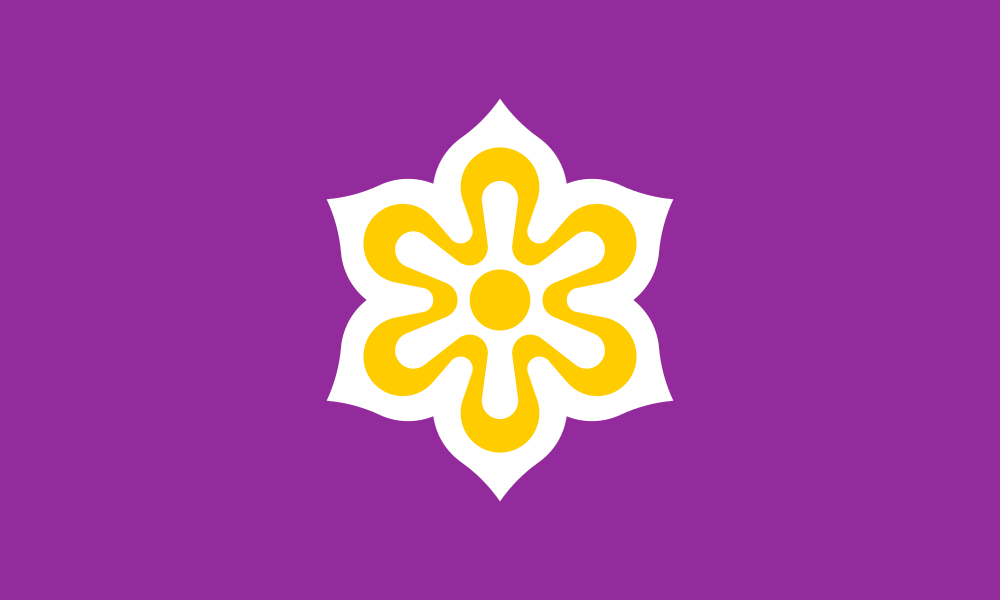

For the design, I chose one of the preset PDF files named "thespot" and thought the overall design
layout would benefit my idea. I plan on making a little information brochure about Kyoto, Japan. Therefore,
the number of images surrounding the text would be enough visual representation of the place. Also, the fact
that there is a descriptions below each image will fit nicely with my goal. The color scheme of the preset
design is a bit too basic and I would like to match it closer to the flag or other traditional items to
match from Kyoto, Japan. The colors of their flag are purple (942B9D), white (FFFFFF), and gold (FFCC00).
As for the text, it is a sufficient amount of text to give a brief overview (history, attractions, culture,
etc.)and even allows for a quote, which I think is a nice touch. The font choices are also good, but I
would like to add some sort of header that spans the whole top of the page to give it a more complete
look and to make it clear what the brochure is about. Additionally, I would like some of the text to be
bolded and a color change to emphasize and highlight certain parts of names or places.
Link to the preset PDF design of "thespot".

I focused on recreating the core layout structure of the "thespot" design:
Used CSS Grid for the main 4-column structure and Flexbox for content organization within sections. The layout balances:
For Phase 2, I'll convert the 4-column layout to a single column on mobile by:
Additionally, in Phase 2, I'll adapt this layout for Kyoto content by adding real images, implementing the responsive design, and applying the Kyoto color scheme (purple, white, gold).
Transformed the design into a Kyoto cultural guide by:
This site is meant to be an informational brochure designed for tourists planning to visit Kyoto or who just want to know more about the culture. It could also be for students researching Japanese culture and history. In general, this would be a great website for any individual wanting to learn more about traditional Japanese arts, customs, and history. The design directly reflects Kyoto's flag, with the purple and gold color scheme, and the readability of a history-style textbook.